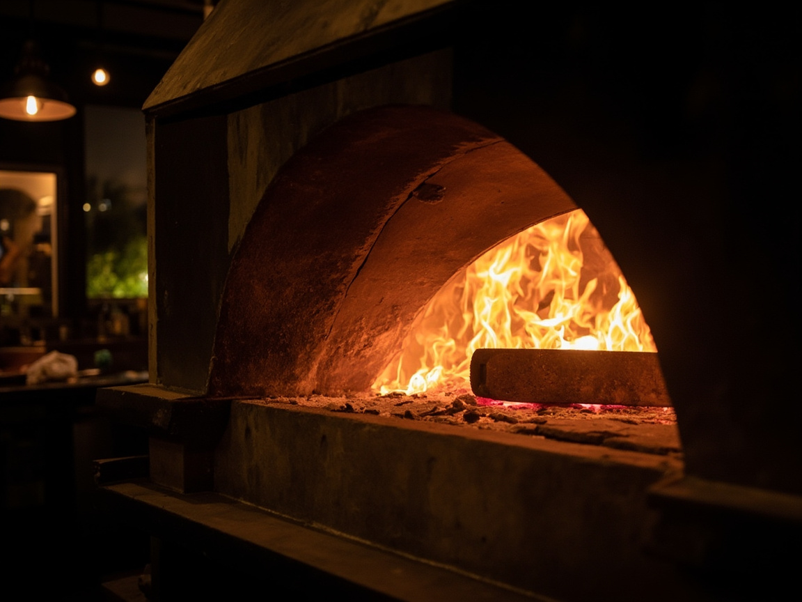
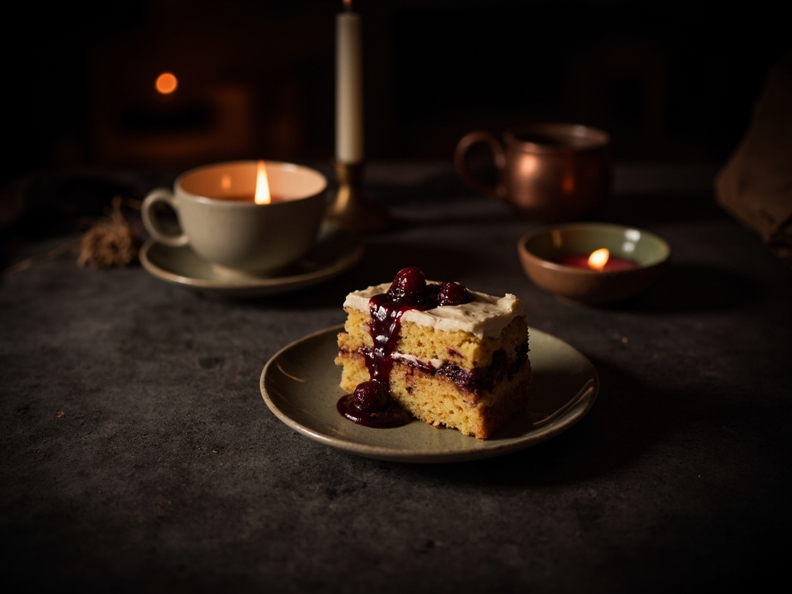

Меню осени · до 1 декабря
Урал.На вкус.
Форель из Режа, суп из белых грибов, щучьи котлеты с печёной тыквой


Меню осени · до 1 декабря
Форель из Режа, суп из белых грибов, щучьи котлеты с печёной тыквой
Меню зимы · с 1 декабря
Копчёная курица с облепихой, щи с говядиной, медовик с брусникой
Меню весны · с 1 марта
Редис с жирной сметаной и сибирская клюква в десертах
Веранда · с 1 июня по 31 августа
Веранда на 24 места, холодные супы и зелень из своего огорода
Денис Курбатов, шеф и совладелец

Пятнадцать лет у плиты: девять в ресторанах Екатеринбурга, четыре в Казани, последние два в «Сезоне».
Меню он пишет по четвертям. Сначала едет к поставщикам, потом на бумаге появляются четыре раздела и пятнадцать позиций. Всё, что нельзя объяснить одной строкой состава, в меню не идёт.
В зале 40 мест, на кухне 12 человек, рыбу привозят 2 раза в неделю, а Денис стоит у плиты 15 лет.

Печь
Зимой гости садятся у печи, летом выносим столы на веранду.


Форель из Режа,облепиху привозяткаждую неделю.
Форель из Режа980 ₽
Облепиховый соус, картофельное пюре, копчёное сало
Белые грибы сушатв Косулино,завариваем без специй.
Суп из белых грибов540 ₽
Сливочная основа, булочка с грибами, лавровый лист


Медовик с брусникой390 ₽
Сметанный крем, ягоды северного сбора, грецкий орех.
В будни с 12:00 до 16:00. Ланч не меняется и не делится на половину порции: заказывают целиком.
Забронировать обед: +7 343 288-14-71Сезон · Шейнкмана, 75
Бизнес-ланч490 ₽
Суп или салат, горячее с гарниром, хлеб, вода, чай или компот
Обед для компаний от пяти человек450 ₽
По заявке, счёт на организацию
Последний заказ15:40
Кухня закрывается16:00
20 минут на медовик
и чай из липы.
Екатеринбург, Шейнкмана, 75
Вход со двора, второй этаж, лифта нет
Стол держим 20 минут от указанного времени. Кухня закрывается за час до зала.
Зал целиком: до 40 гостей, банкетное меню от 3 900 ₽ на гостя. Парковка во дворе на 30 мест, первый час бесплатно.